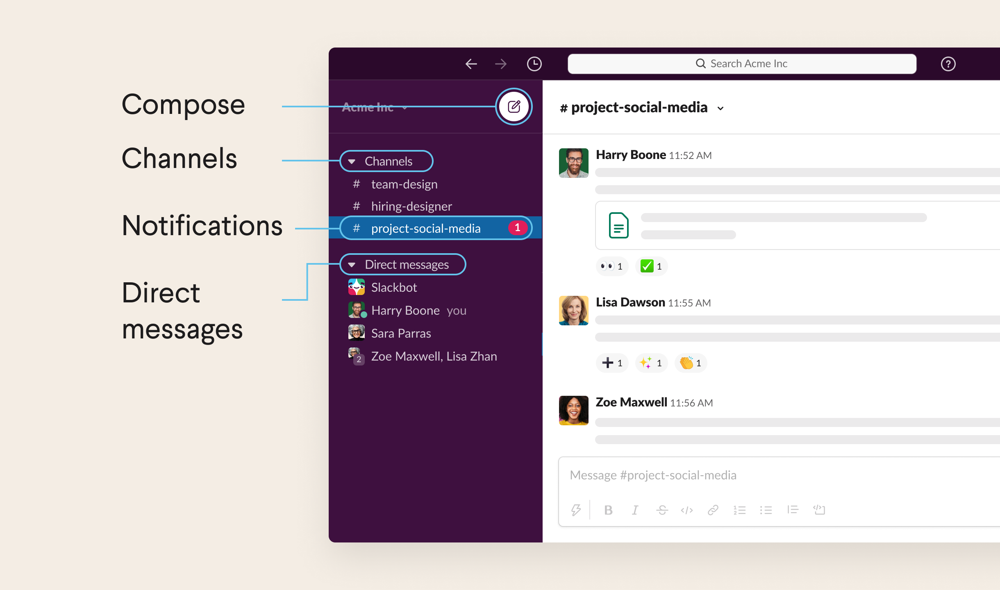

Top Products
Here are the products that we recommend using!:
1. Microsoft Visual Studio Code

Reason: Microsoft Visual Studio Code is like none other with its friendly user interface and it's customizability. It is truly a versatile software where you are able to use it to program multiple languages such as Java, CSS, HTML, JavaScript, Python, etc. The built-in file explorer makes it extremely easy to navigate through your folders and files or even create new programming language files by simply typing a name for the file and the initials of the programming language name. Not only that, Visual Studio Code also features a built-in terminal (which is literally Powershell or Command Prompt integrated into Visual Studio Code).
2. Slack
Reason: Slack is a very useful tool when it comes to communicating with your team members. One can be able to direct message an individual of the team. This can also be useful for teachers when it comes down to communicating with their students in the need of assistance. Push Notifications are key when it comes to mobile devices as e-mails could sometimes be a hassle to monitor or read.